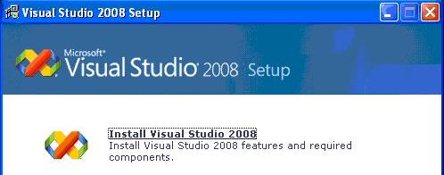
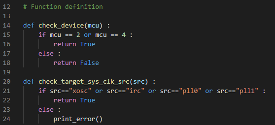
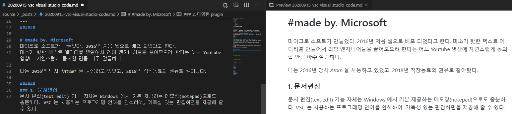
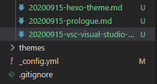
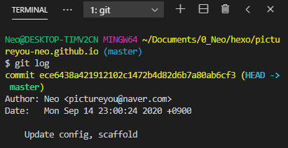
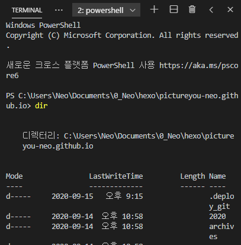
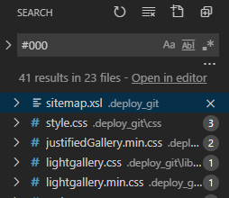

#텍스트 에디터?
아주 어렸을 때, 정보처리기능사 자격증을 따기 위해 Visual basic 이라는 툴을 사용했었고, 대학 신입생 때에는 처음 C 와 C++ 코드를 작성하기 위해 Visual Studio 2008 를 사용 했었다.

그 때부터 지금까지 내가 거쳐갔던 IDE 툴과 텍스트 에디터 들이 많지만, 오늘은 최근 가장 핫한 텍스트 에디터인 Visual Studio Code, 줄여서 VSC 에 대해 적어보고자 한다.
#made by. Microsoft
마이크로 소프트가 만들었다. 2016년 처음 웹으로 배포 되었다고 한다.
마소가 핫한 텍스트 에디터를 만들어서 리딩 엔지니어들을 끌어모으려 한다는 어느 Youtube 영상에 자연스럽게 동의할 만큼 아주 깔끔하다.
나는 2016년 당시 Atom 을 사용하고 있었고, 2018년 직장동료의 권유로 갈아탔다.
1. 문서편집
문서 편집(text edit) 기능 자체는 Windows 에서 기본 제공하는 메모장(notepad)으로도 충분하다. VSC 는 사용하는 프로그래밍 언어를 인식하여, 가독성 있는 편집화면을 제공해 줄 수 있다.

2. 다양한 extensions
어쩌면 VSC 를 사용하는 가장 큰 이유 일지 모른다. 설마 이게 되겠어? 싶은게 된다. extension 추천은 따로 포스팅 하고 싶을 정도로 그 종류가 많은데, 가장 최근의 경우는 마크다운(markdown, .md) 문법을 사용하려고 했을 때이다. 문법에 서툴러서 작성하고 브라우저나 로컬 서버에서 봐야만 했다. 여러 텍스트 에디터를 찾아보던 중에 결국 VSC 의 Markdown Preview Github Styling extension 으로 정착했다.

3. Git 제어
사실, 내가 재직중인 업계에서는 잘 쓰는지 모르겠다. 나도 많이 늦게 접하긴 했으나 Git은 버전관리에 매우 강력하고 Git bash 나 Source tree 같은 툴을 사용해야 한다. VSC 는 Git 을 사용하기 매우 좋은 환경이다.

4. 내장 terminal
CLI 인터페이스를 사용하기 위해서는 윈도우키->cmd 를 통해 command prompt 를 사용해야 한다. 거의 대부분 GUI build 를 지원하지 않는 환경에서는 CLI 인터페이스를 활용하여 make 해야만 한다. VSC 는 terminal 이 내장되어 있어 알트탭 없이도 한 화면에서 가능하다.
단축키는 [ Ctrl+Shift+` “ ] 이다.


5. Search
모든 텍스트 편집기가 지원하는 기능이다. VSC 는 단축키 [ Ctrl+Shift+F “ ] 로 경로 내의 검색이 가능하며, 조건부 검색도 가능하다.
개인적으로, 이 기능만 있어도 Github 에서 reference project 를 다운받아 얼마든지 새로운 언어나 환경에 도전할 수 있다고 생각한다.

#늘 쓰던걸로
특히 여러가지 언어를 쓰는 사람은 하나의 툴로 여러가지 언어를 사용할 수 있기 때문에 매우 편리하다. 나도 아직 특정 업무를 할 때는 다른 툴을 쓰고 있지만(비교 : Winmerge, Beyond compare, 매크로 : notepad++), 왠지 extension 이나 다른 어떤 방법으로 저런 것들도 VSC 에서 가능할것만 같다.